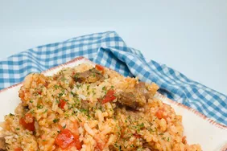

Odin recipes

Return to main
Ingredients
rice
salt
maggi
chicken
curry
Steps
pour water on your pot
wash the rice and pour it inside the hot water
add curry and the recipes
put the chicken inside
food is ready to serve